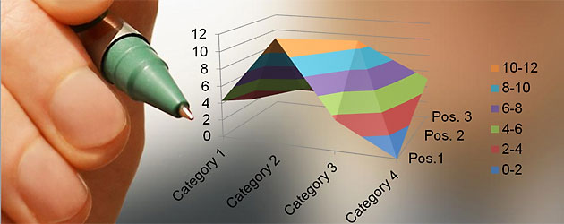

Web Evaluation
Pilihlah dan identifikasi beberapa website ataupun web app (lebih dari satu) yang kamu sukai. Kalau bisa selain social media yang populer.
Pilihan saya jatuh pada
Mengapa website tersebut kamu pilih?
Karena kemudahan yang saya dapatkan dari
Hal apa yang disajikan atau dijual? Apakah ada masalah yang diselesaikan oleh website tersebut?
Yang dijual adalah multi browser platform untuk semua OS, baik pc dan mac maupun smartphone mulai iOS, android dan windows phone.
Bagian mana pada website tersebut yang paling menarik dan paling penting?
Semua bagian website tersebut menarik dan penting buat saya.
Deskripsikan website tersebut secara visual, dengan minimal 5 sifat. (elegan, sederhana, cantik, minimal, gelap, terang, dll)
Segar, cerah, rapi, minimalis dan menenangkan.
Deskripsikan sifat konten, fokus, atau tujuan website tersebut, dengan minimal 5 sifat. (teoritis, seru, lucu, serius, praktis)
Fokus, serius, seru, informatif dan praktis.
Seberapa mudah kamu dapat menemukan hal yang kamu cari dari halaman utama? Bagaimana jika dari halaman lain?
Sangat mudah karena website tersbut memiliki user interface dan user experience yang bagus untuk saya sebagai pengguna yang aktif.
Seberapa mudah kamu dapat browsing semua konten di dalamnya?
Sangat mudah karena website tersebut yang minimal memudahkan saya untuk menemukan apa yang saya cari lebih cepat.
Apa yang kamu rasakan setelah berada di website tersebut? (senang, bosan, pintar, tenang, khawatir, buang waktu, terbantu)
Untuk menunjang pekerjaan tentunya sangat terbantu, senang karena dengan satu pc bisa mengakses berbagai macam OS komputer dan smartphone.
Jika website tersebut menjual sesuatu, apakah kamu pernah membeli sesuatu yang di jual di sana? Mengapa dan mengapa tidak?
Website tersebut memang menjual lisence key untuk bisa menggunakannya secara kontinyu, tanpa membeli lisence key kita hanya bisa memanfaatkan kemudahan tersebut untuk waktu yang sangat terbatas dalam program free-trial.